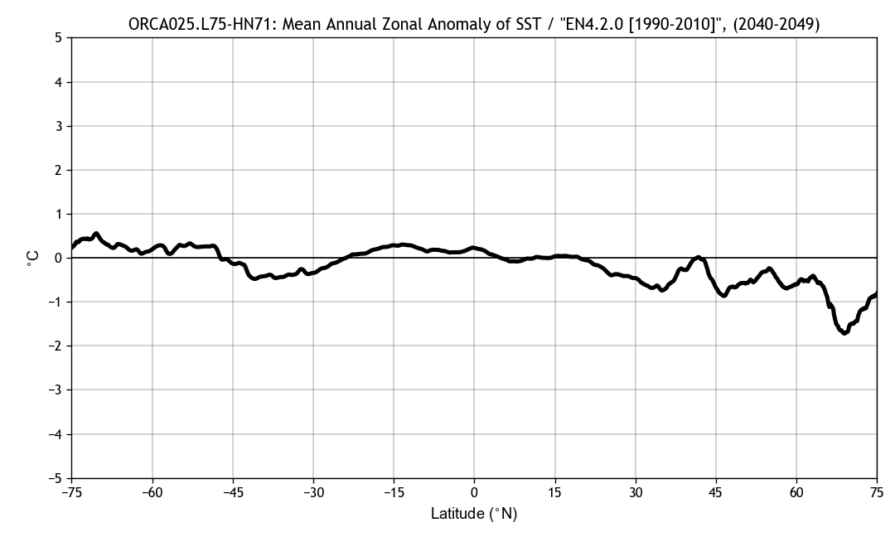
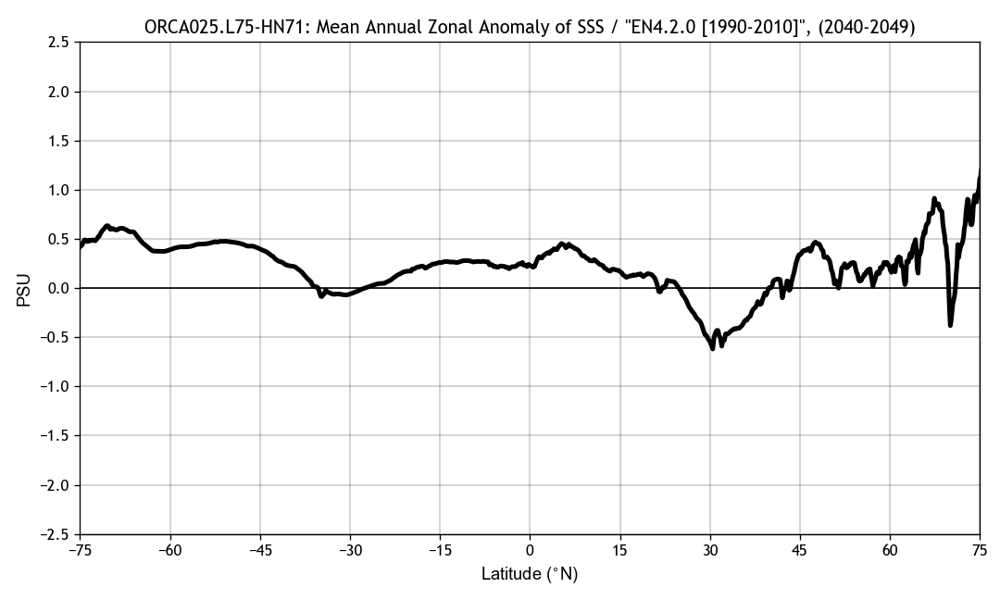

Ocean diagnostics for ORCA025.L75 experiment "HN71"
Coupled to atmospheric model: IFS T0
Info: NEMO 3.6 + LIM 3 (EC-Earth 3.2.2)
Simulation mastermind(s): SMHI / Uwe
Last updated: 2017-05-22 at 13:47:48
Created on 'TRIOLITH.nsc.liu.se'
Temperature and Salinity 2D diags, ORCA025.L75-HN71 / OBS


Page and diagnostics created with BaraKuda...